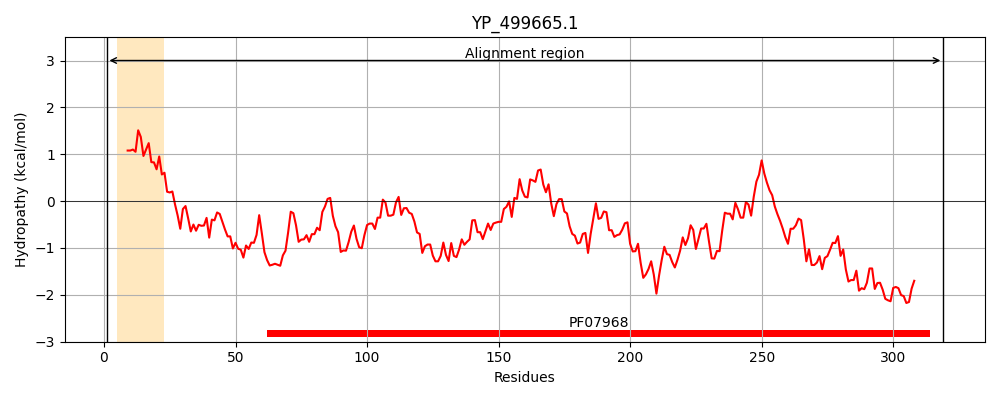
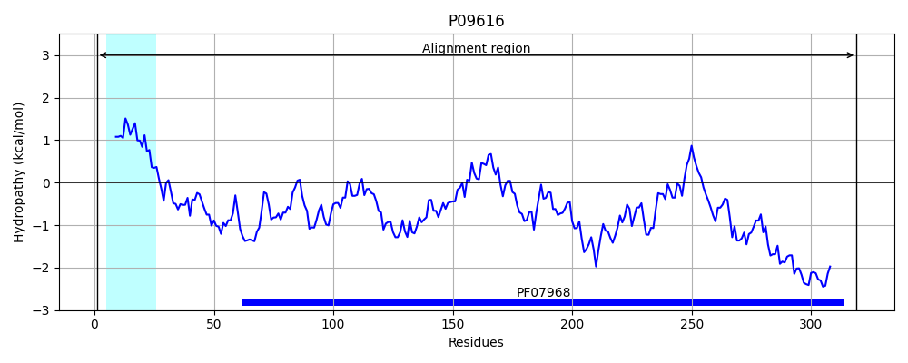
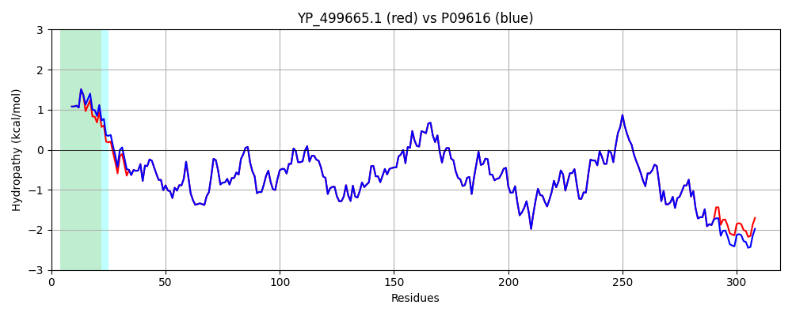

Hit Accession: P09616
Hit TCID: 1.C.3.1.1
Hit Description: gnl|BL_ORD_ID|8521 gnl|TC-DB|P09616|1.C.3.1.1 ALPHA-HEMOLYSIN PRECURSOR (ALPHA-TOXIN) (ALPHA-HL) - Staphylococcus aureus.
Mach Len: 319
e:0.000000
Query TMS Count : 1
Hit TMS Count: 1
TMS-Overlap Score: 0.950000
Predicted Substrates:CHEBI:3731;chloride, CHEBI:2359;ATP, CHEBI:25367;molecule
BLAST Alignment:
Score: 1679 , Bit scores: 651 bits, E-value: 0.0e+00, Alignment length: 319, Percentage identity: 99
Query: 1 MKTRIVSSVTTTLLLGSILMNPVANAADSDINIKTGTTDIGSNTTVKTGDLVTYDKENGMHKKVFYSFIDDKNHNKKLLVIRTKGTIAGQYRVYSEEGANKSGLAWPSAFKVQLQLPDNEVAQISDYYPRNSIDTKEYMSTLTYGFNGNVTGDDTGKIGGLIGANVSIGHTLKYVQPDFKTILESPTDKKVGWKVIFNNMVNQNWGPYDRDSWNPVYGNQLFMKTRNGSMKAADNFLDPNKASSLLSSGFSPDFATVITMDRKASKQQTNIDVIYERVRDDYQLHWTSTNWKGTNTKDKWIDRSSERYKIDWEKEEMTN 319
MKTRIVSSVTTTLLLGSILMNPVA AADSDINIKTGTTDIGSNTTVKTGDLVTYDKENGMHKKVFYSFIDDKNHNKKLLVIRTKGTIAGQYRVYSEEGANKSGLAWPSAFKVQLQLPDNEVAQISDYYPRNSIDTKEYMSTLTYGFNGNVTGDDTGKIGGLIGANVSIGHTLKYVQPDFKTILESPTDKKVGWKVIFNNMVNQNWGPYDRDSWNPVYGNQLFMKTRNGSMKAADNFLDPNKASSLLSSGFSPDFATVITMDRKASKQQTNIDVIYERVRDDYQLHWTSTNWKGTNTKDKW DRSSERYKIDWEKEEMTN
Sbjct: 1 MKTRIVSSVTTTLLLGSILMNPVAGAADSDINIKTGTTDIGSNTTVKTGDLVTYDKENGMHKKVFYSFIDDKNHNKKLLVIRTKGTIAGQYRVYSEEGANKSGLAWPSAFKVQLQLPDNEVAQISDYYPRNSIDTKEYMSTLTYGFNGNVTGDDTGKIGGLIGANVSIGHTLKYVQPDFKTILESPTDKKVGWKVIFNNMVNQNWGPYDRDSWNPVYGNQLFMKTRNGSMKAADNFLDPNKASSLLSSGFSPDFATVITMDRKASKQQTNIDVIYERVRDDYQLHWTSTNWKGTNTKDKWTDRSSERYKIDWEKEEMTN 319 | Protein Hydropathy Plots: |
|---|
|  |  |
Pairwise Alignment-Hydropathy Plot:
|
|---|
|  |